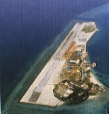
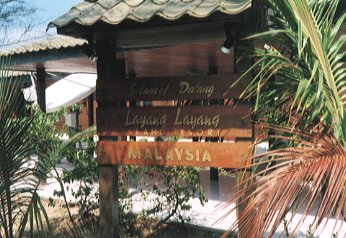
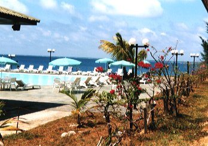
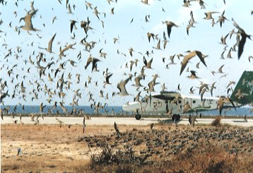
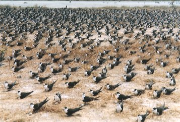
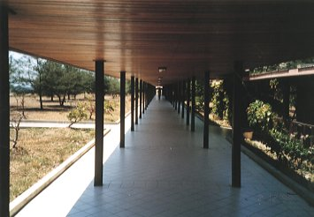
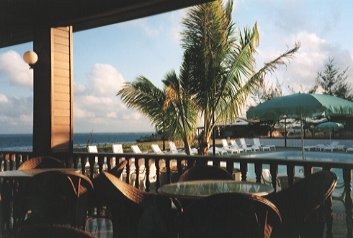

|
|
|
Layang Layang Island resort
 滑走路が出来て広くなった島 【 Layang Layang Is.】今回の運用場所となったLayang Layang Isは、東マレーシアから北西約300Kmの南シナ海(South China Sea)の南沙諸島に浮かぶ珊瑚礁の島。 DXCCではSpratly Is(英国人は「スパートリー」と発音する)と呼ばれているが、 マレーシアでは「Pulau Layang Layang」と呼ばれている。島と言っても珊瑚礁を埋め立てて造られた周囲1Kmほどの人工の島だが、 1995年にリゾートホテル(Layang Layang Island resort)がオープンして世界中のダイバーが訪れる様になった。東マレーシアの首都、コタキナバルから小型の双発プロペラ機で約1時間で渡れるので便利になり、我々が訪れた時も、 若い女性を含む日本人のグループが10人ほど滞在しており、日本語が飛び交いまるで沖縄かグアム、サイパンにでも来たような錯覚を覚えた。 ホテルの中庭のプールサイドでノンビリ「甲羅乾し」をする宿泊客もいて平和そのものだ。 "スプラトリーは危険な場所"というイメージは、今やハムの世界だけなのかも知れない。 平屋建てのこのリゾートホテルは、6ブロック86室、200人ほどが泊まれる設備を持っているとのことだが、 客室はエアコンが良く効いて快適にリゾート気分を味わえる。 島に飛行場が建設され整備されたため、以前よりも島は大きくなっている。タイトルの写真は飛行場がまだ出来ていない時に撮ったものだが、 現在は長方形の島に変身した。
  飛行機を降りると20、30歩でホテルの玄関に到着する／小さいながらプールもある
ホテルはテレビ、冷蔵庫、電話、シャワーも完備していて、なに不自由のない近代的な生活が送れる。
  滑走路の脇の地面に巣を作り、風上に頭を向けて卵を抱く海鳥の群
島の東側にマレーシア海軍の基地があり、唯一緊張状態を思い出させる場所だが、 ダイビング用のボート置き場と隣り合わせの岸壁に時折り出入りする「軍艦」と、週に何回か「空砲」の音が響く程度で、 危険は感じない。夕方になると30人ほどの兵士(と言ってもTシャツの私服姿だが)が滑走路をジョギングしているのがみられる。 乗り物は軍の関係者が時折見回りで乗り回している4WDのオフロード車、荷物運びに使うトラクター、 ホテルの従業員が使っているマウンテンバイクなどが3、4台。
  ホテルの6棟はこの長い通路で結ばれている／朝、夕の食事はこのホテルのテラスで
◎ このDX-Peditionでは、"Log Search"を Homepage経由で行なっています。 9M0Cに関する情報は 9M0C SPRATLY 1998 Homepageでご覧下さい。
|